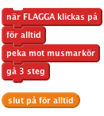
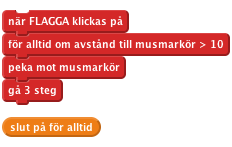
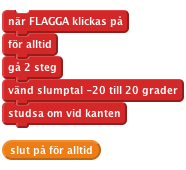
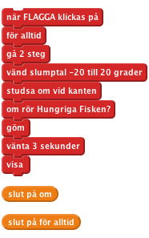
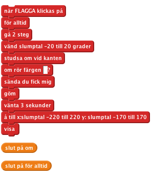
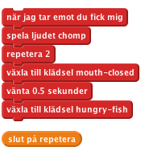

Den hungriga fisken
Introduktion: Vi ska göra ett spel om en hunrgig fisk! Styr den stora Hungriga Fisken och försök att äta upp alla kräftor som simmar omkring.
STEG 1: Skapa en sprite som följer muspekaren
Nu ska få vi den Hungriga Fisken att simma omkring i havet!
- Skapa ett nytt Scratchprojekt.
- Välj Scenen, och sen scenens flik Bakgrunder. Importera bakgrunden nature/underwater och ta bort background1.
- Byt namn på Sprite 1 så den heter Hungriga Fisken.
- Importera Hungriga Fiskens klädsel från resources/hungry-fish och ta sedan bort dess befintliga costume1 och costume2.
- Klicka på knappen ovanför Klädslar-fliken så att fisken bara kan simma höger-vänster.
- Nu ska du skapa ett script för Hungriga Fisken så att den följer muspekaren runt i havet. Det gör du såhär:

Testa ditt projekt
Klicka på den gröna flaggan. Flytta runt muspekaren i havet. Följer fisken pekaren? Vad händer om du inte flyttar muspekaren och fisken hinner ikapp den? Hur ser det ut? Varför händer det?
- Du kan stoppa Hungriga Fisken från att flippa som en galning om du gör så att den bara rör sig när den inte är för nära muspekaren. (avstånd till-blocket finns i Känna av-paletten.)

Testa ditt projekt
Spara ditt projekt
Saker att pröva
Om du vill så kan du byta ut siffrorna i scriptet till andra. Hur påverkar det hur Hungriga Fisken rör sig? Byt ut avståndströskeln till ett högre nummer (t.ex. 100) eller ett lågt nummer (t.ex. 1). Byt ut hur mycket fisken fisken rör sig till ett högt nummer (t.ex. 20) eller ett lågt nummer (t.ex. 1 eller till och med 0).
STEG 2: Lägg till lite kräftor
- Skapa en ny sprite från filen animals/lobster1.
- Använd Förminska sprite-verktyget (ovanför Scenen) för att göra spriten mindre.
- Skapa ett script som får kräftorna att simma omkring. Vi vill att de ska röra sig slumpvist, så vi får dem att gå framåt en liten bit och gör sen så att de slumpvist vänder sig åt vänster eller höger, och sen fortsätter så.

Testa ditt projekt
Klicka på den gröna flaggan och se hur kräftorna simmar omkring. Simmar de som du hade tänkt dig? Simmar de realistiskt?
Just nu interagerar inte Hungriga Fisken med kräftorna. Det löser vi i nästa steg.
Spara ditt projekt
Saker att pröva
- Pröva att byta ut siffrorna i slumptalet och gå-blocken. Rör sig kräftorna annorlunda?
- Vad gör studsa om vid kanten-blocket? Ta bort det och se vad som händer.
STEG 3: Hungriga Fisken äter kräftorna
Nu vill vi att Hungriga Fisken ska äta kräftorna! När Hungriga Fisken har fångat en kräfta i munnen ska två saker hända: * Hungriga Fisken ska stänga sin mun och göra ett ätljud. * Kräftan ska försvinna för att sen komma tillbaka lite senare.
- Först får vi kräftan att försvinna om den nuddar Hungriga Fisken, för att sen komma tillbaka 3 sekunder senare. Använd rör-blocket för att se om kräftan vidrör fisken.

Testa ditt projekt
Testa ditt spel igen - kan du hitta några fel? Lägg märke till att kräftorna försvinner oavsett var på Hungriga Fisken den nuddar. Och så skulle fisken bara kunna vänta i 3 sekunder och äta kräftan igen precis när den kommer tillbaka - vilket inte är så rättvist!
- Hur kan vi se till att kräftan bara försvinner om den nuddar Hungriga Fiskens mun? Vi skulle kunna använda rör färgen-blocket och kolla om den nuddar fisken blå tänder. För att göra det här behöver du byta ut rör-blocket mot ett rör färgen-block i ditt script, sen klicka på färgen i blocket och till sist klicka på fiskens tänder.
- Sen kan vi få kräftan att röra sig mot en slumpvis punkt på skärmen innan den kommer tillbaka igen, och ge den ett slumpvärde för x och y.
![när FLAGGA klickas på
för alltid
gå 2 steg
vänd slumptal -20 till 20 grader
studsa om vid kanten
om rör färgen []?
göm
vänta 3 sekunder
gå till x:slumptal -220 till 220 y: slumptal -170 till 170
visa
(slut på om)
(slut på för alltid)](2c6edeae29695f4cfe4ff0409ccf83efb24f5899.png)
Testa ditt projekt
Testa spelet igen - försvinner kräftan bara om den har nuddat fiskens mun? Och kommer den tillbaka på en slumpvis punkt på skärmen istället för där den var när den åts upp?
- Fisken behöver veta när den har ätit något så att den kan spela ett ljud och byta utseende. För att lösa det kan vi låta kräftan sända ut att den har blivit uppäten innan den försvinner.

Nu vill vi att fisken ska svara på det här meddelandet genom att göra ett ätljud och slå ihop käkarna.
- Lägg till klädseln resources/mouth-closed och ljudet resources/chomp till Hungriga Fisken-spriten.
- Lägg sen till ett nytt script till Hungriga Fisken så att den svarar på meddelandet som kräftan skickat ut. Det här scriptet ska få fisken att spela upp ätljudet och byta till klädseln med stängd mun, vänta lite grann och sen byta tillbaka igen.

Nu är Hungriga Fisken redo att äta, så vi fyller havet med kräftor. Högerklicka på kräftspriten och klicka på "kopiera" flera gånger.
Testa ditt projekt
Klicka på den gröna flaggan. Äter den Hungriga Fisken kräftorna? Äter den alla kräftorna?
Spara ditt projekt
Saker att tänka på
Varför måste vi lägga till ett visa-block i början av kräftans script? Fundera på vad som skulle hända om kräftan blev uppäten och spelet avslutades innan den hann komma tillbaka. Vad skulle hända om spelet startades om då?
Bra jobbat, nu är du klar med grundspelet. Men det finns fler saker du kan lägga till. Är du redo för en utmaning?
Utmaning 1: Få kräftorna att röra sig annorlunda
Just nu rör sig alla kräftorna på samma sätt. Kan du få en av dem att röra sig annorlunda? Ledtråd: Lägg inte för mycket tid på den här delen utan att kolla in de andra utmaningarna i det här projektet.
Välj en av kräftorna att experimentera med. Om de alla har samma klädsel, ändra färgen på experimentkräftan med ändra färgeffekten-blocket. På så vis kan du alltid känna igen den.
Gör så att experimentkräftan rör sig långsammare än de andra. Ledtråd: Kolla in gå 2 steg-blocket.
Testa ditt projekt
Rör sig kräftan långsammare? Gör det spelet roligare? Nu kan du pröva att få en av kräftorna att röra sig snabbare än de andra.
Rör sig kräftorna fortfarande på ett bra sätt? Gör de här ändringarna att spelet blir roligare? Ledtråd: Om dina kräftor simmar runt i cirklar, kolla in värdena i slumptal-blocket och vänd-blocket.
Tänk om du skulle göra så att alla kräftor betedde sig olika, genom att ändra de här värdena på olika sätt?
Gör någon av dina ändringarna att spelet blir bättre? Gör de spelet mer intressant, kul, svårt, eller lätt?
Spara ditt projekt
Utmaning 2: Få kräftorna att undvika Hungriga Fisken
Kräftorna i det här spelet är väldigt dumma! De bara simmar omkring hursomhelst tills de blir uppätna. Riktiga bytesdjur simmar bort från rovdjur. Vi gör så att en av kräftorna simmar iväg från Hungriga Fisken.
Det finns inget block i Scratch som säger vilket håll en annan sprite är på väg åt. Men du kan få en sprite att peka mot en annan spite, och sen få den att vända sig åt andra hållet. Blocken du behöver finns i Rörelse-paletten.
Gör nu så att en av kräftorna alltid pekar åt motsatt håll som Hungriga Fisken. Du kanske även vill få den att vagga lite när den simmar iväg.
Testa ditt projekt
Gör det här kräftan svårare att fånga? Gör det spelet bättre?
Spara ditt projekt
Utmaning 3: Lägg till ett poängsystem
Det räcker inte med att bara äta kräftor. Hur vet du att du är bättre än dina kompisar? Du måste ha ett sätt att hålla koll på poängen, så vi lägger till en poängtavla. Titta på Scratch-kortet Keep Score som beskriver hur man gör det.
Var ska du lägga blocket som uppdaterar poängen?
Se till så att poängen nollställs i början av spelet. Var ska det blocket vara?
Testa ditt projekt
Nollställs poängen när du startar spelet? Blir den högre varje gång du äter en kräfta?
Spara projektet
Utmaning 4: Lägg till en timer
Ge dig själv en tidsgräns i spelet. Hur många kräftor kan du äta på 30 sekunder?
Titta på Scratch-kortet Timer för att förstå hur man lägger till en timer i spelet. Börja med att spelet håller på i 30 sekunder.
Tesa ditt projekt
Börjar timern på 30?
Tickar den ner i rätt hastighet?
Kan du fånga kräftor medan timern är igång?
Avslutas spelet när timern blir 0?
Spara ditt projekt
Utmaning 5: Lägg till bonuspoäng
Dela ut en stor bonuspoäng om du kan äta alla tre kräftorna på samma gång. Hur kan du hålla koll på hur många kräftor som har blivit uppätna? Ledtråd: Ett sätt att göra det här på är att använda en variabel för att räkna hur många kräftor som simmar omkring.
Spara ditt projekt
Utmaning 6: Ändra spelreglerna: håll kräftorna vid liv!
Ibland får man de bästa idéerna genom att ta en existerande idé och göra motsatsen.
Ändra i spelreglerna så att du, istället för att kontrollera fisken som försöker äta de andra, kontrollerar en kräfta i havet med massor av Hungriga Fiskar. Hur länge kan du klara dig utan att bli uppäten?
Spara ditt projekt
Bra jobbat, du är klar! Nu kan du spela! Kom ihåg att du kan dela med dig av spelet till dina kompisar och din familj genom att klicka på Dela ut i menyn!